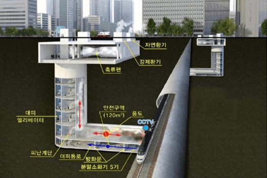
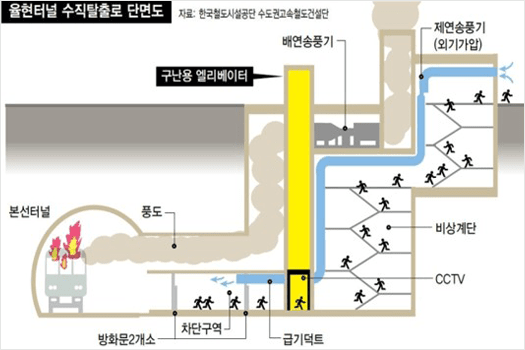
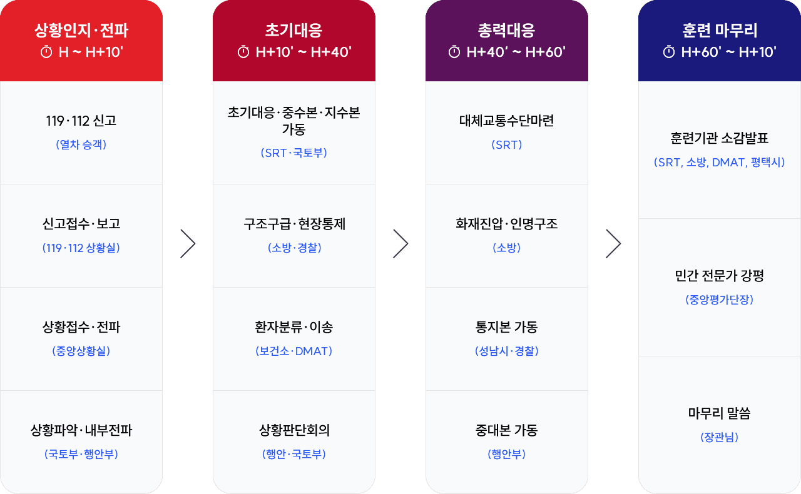
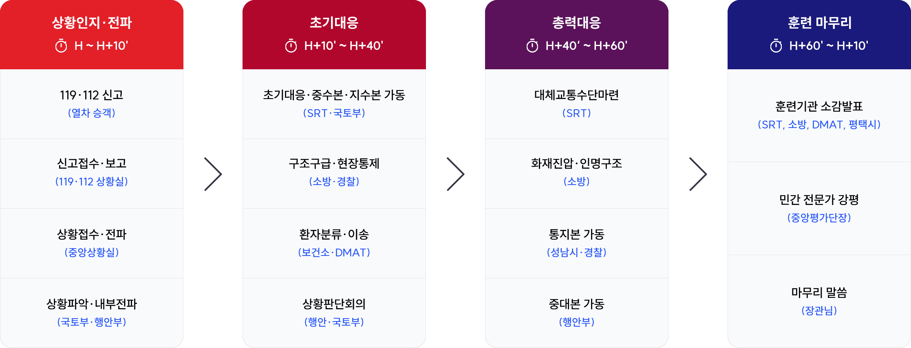

훈련 계획
#훈련을 실전처럼 SAFE Korea
고속철도(SRT)사고 중점훈련에 대해 소개합니다.
2023년 1차 훈련
고속철도(SRT)사고 중점훈련 계획(안)
- 훈련 일시
-
‘23.8.18.(금) 잠정 02:00~03:00 (훈련 강평 : 03:00~03:10 )
※ 열차 운행 및 시설관리 시간(04시~익일01시)을 고려, 새벽에 훈련 실시
- 훈련 장소
-
고속철도(SRT) 율현터널 2번 수직구(성남시 소재)
※ 훈련기관별 위기관리기구 및 상황실을 가동하여 실시간 연계 훈련
- 참석 기관
-
행안부*,국토부,복지부,SR,성남시,DMAT등16개 기관
※ 훈련기관별 위기관리기구 및 상황실을 가동하여 실시간 연계 훈련
- 훈련 내용
-
지제-수서간 율현터널 내 SRT 운행 중 방화로 인한 정전 및 급정거하는 상황에서 상황전파, 인파난기류 해소,
초기대응기관 협업체계, 위기대응기구의 적절한 가동 등 점검
훈련장소(율현터널 2번 수직구) 현황
- 율현터널 현황
-
- 1위치·연장 : 평택-동탄-용인-성남-강남구를 잇는 총연장 50.3km 최장 터널
- 2특징 : 평균깊이 50m 간선 철도터널 ※ 개통(2016년) 이래 현장훈련 미실시
- 3안전시설 : 수직구(16개소, 구난용 승강기, 비상계단, 대피공간), 차량출입구(4개소)
- 훈련 위치(2번 수직탈출구) 현황
-
- 1위치·깊이 : 경기도 성남시 소재, 깊이 약50m
- 2대피시설 : 선로와 차단된 400면 수용 대피공간, 탈출계단 및 비상용 승강기


고속철도(SRT)사고 중점훈련 흐름도(안)



고속철도(SRT)사고 중점훈련 주요 점검사항
상황 인지·보고·전파
- 아이콘기존 대응 시 문제점
-
- 112·119상황실 중첩신고에도 출동 지연, 공동대응 미흡
- 기관 내부 보고 및 기관 간 상황전파 지연
- 아이콘훈련 중점사항
-
- 1승객 신고 접수 → 112·119 상황실 신속한 보고·전파
- 2내부전파 및 보고체계에 따른 신속한 상황전파
인파 난기류 해소
- 아이콘기존 대응 시 문제점
-
- 일순간 대피 집중 시, 대피유도가 없는 상황에서 인파 밀집사고 발생
- 아이콘훈련 중점사항
-
- 3안내방송, 대피유도 요원, 대피 유도 시설물 등을 활용하여 대피 유도
초기 대응
- 아이콘기존 대응 시 문제점
-
- 현장대응기관 간 정보 공유 부족으로 초기 대응 기관 간 협업 미흡
- 아이콘훈련 중점사항
-
- 4소방·경찰·DMAT·지자체가 PS-LTE를 활용하여 상황공유 및 체계적 대응
위기 대응기구 가동
- 아이콘기존 대응 시 문제점
-
- 위기대응기구 운영, 위기경보 발령, 기구 간 임무·역할 모호
- 아이콘훈련 중점사항
-
- 5상황판단회의 개최, 위기대응기구 운영, 위기경보 발령, 기구간 임무·역할 명확화